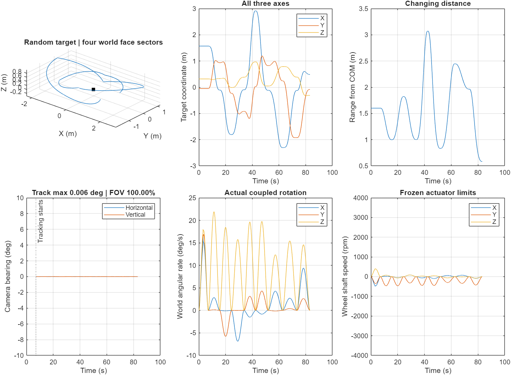
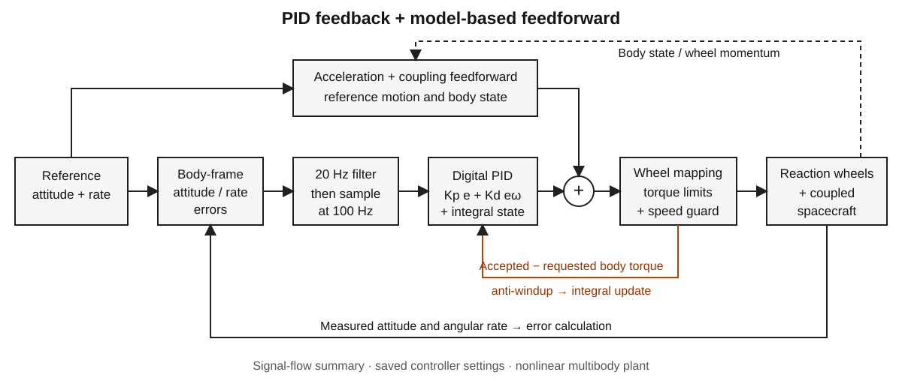
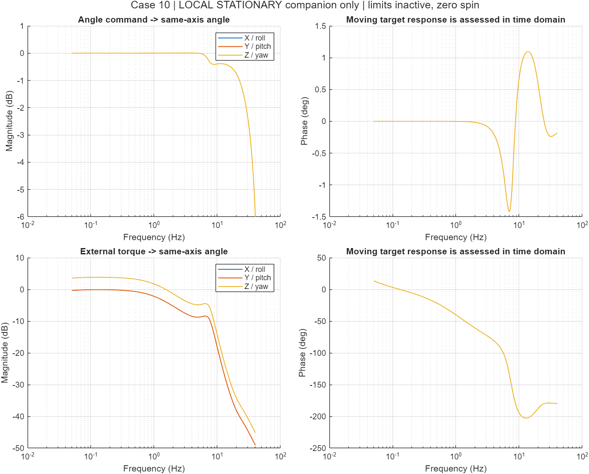

Simulations / ORBES / Simscape Multibody
Reaction-wheel tracking
Three-axis attitude motion keeps a fixed camera pointed at a moving target.
A smooth random XYZ path carries the target through the +X, +Y, −X and −Y world sectors twice. One camera fixed along the body's +Z axis follows as the satellite rotates. Nine waypoints vary position, range and desired roll.
- Peak pointing error
- 0.005812°
- RMS pointing error
- 0.002536°
- Tracking within ±10° FOV
- 100%
Random XYZ tracking
0–7 s Initial camera acquisition; target held stationary.7–83.168 s Moving-target tracking and the evaluated pointing window.
Tracking response


| Measure | Result |
|---|---|
| Target range from satellite centre of mass | 0.583–3.070 m |
| Peak attitude error during tracking | 0.010709° |
| Peak rate error, X / Y / Z | 0.02437 / 0.01342 / 0.00537 °/s |
| Maximum absolute wheel speed, X / Y / Z | 494.77 / 465.68 / 408.48 rpm |
| Wheel-speed limit | 4000 rpm |
Optical and attitude diagnostics use 100 Hz samples. Actuator maxima use all saved solver samples. The camera remains inside the rectangular ±10° horizontal and vertical field of view throughout the evaluated tracking window.
PID feedback and feedforward
The controller combines proportional correction of attitude error, integral correction of accumulated error and derivative feedback from angular-rate error. Model-based feedforward adds torque for the commanded angular acceleration and rotational coupling. Torque limits, a wheel-speed guard and anti-windup bound the actuator commands.
“Frozen controller” means these gains, feedforward settings and actuator limits were kept unchanged when the plant mass properties and target path changed. The controller continues calculating new wheel commands throughout the motion.

| Axis | Kp N·m/rad | Ki N·m/(rad·s) | Kd N·m·s/rad |
|---|---|---|---|
| X / roll | 1.013283 | 0.0900696 | 0.1621253 |
| Y / pitch | 1.013283 | 0.0900696 | 0.1621253 |
| Z / yaw | 0.6459748 | 0.0574200 | 0.1033560 |
Sample time Ts = 0.01 s; error-filter cutoff = 20 Hz; anti-windup time constant = 0.1 s. Each wheel has a ±0.1 N·m torque cap and a 4000 rpm speed limit, with its accelerating-torque allowance reduced over the final 600 rpm.
Controller equations and transfer functions
Implemented digital feedback: eθ and eω are the filtered body-frame attitude and angular-rate errors. The derivative term uses rate error directly.
τraw[k] = τff[k] + Kp eθ[k] + Kd eω[k] + η[k]
η[k+1] = clip(η[k] + Ts {Ki eθ[k]
+ (τaccepted[k] − τraw[k]) / Taw}, ±τlimit)
Cθ(z) = Kp + Ki Ts / (z − 1) Cω(z) = KdThe Cθ and Cω expressions apply with limiting and anti-windup inactive. The gain vectors act component by component. Wheel-joint torque signs are [−1, −1, +1]; τaccepted is mapped back to body-torque convention for anti-windup.
Stationary, decoupled baseline plant: torque-to-angle and torque-to-rate companions use the controller's original identified inertias: Ix = Iy ≈ 0.0045034803 kg·m², Iz ≈ 0.0028709991 kg·m².
Pθ,i(s) = 1 / (Ii s²) Pω,i(s) = 1 / (Ii s)
PX,Y(s) ≈ 222.0505 / s² PZ(s) ≈ 348.3108 / s²
Ci(s) = Kp,i + Ki,i / s + Kd,i s
Li(s) = F(s) Ci(s) / (Ii s²)
= F(s) (36 s² + 225 s + 20) / s³Ci(s) and Li(s) are continuous-time, feedback-only approximations for small attitude errors. The gain construction is Kp,i = 225 Ii, Kd,i = 36 Ii and Ki,i = 20 Ii. The full replay uses the coupled NX mass-matched plant, reference feedforward, sampled control and actuator limits.
F(s) = ωc⁴ / [s⁴ + √(4 + 2√2) ωc s³
+ (2 + √2) ωc² s² + √(4 + 2√2) ωc³ s + ωc⁴]
ωc = 2π × 20 rad/sThe Bode plot below uses the stationary baseline plant and analog error filters discretized together with a zero-order hold, plus the digital integral term. Its command-response channel also includes reference-rate and acceleration feedforward, so it differs from feedback-only Li(s).


The upper plots show how closely each axis follows an angle command across frequency; the lower plots show its response to an external torque. Magnitude describes response size and phase describes its timing relative to the input. These are local closed-loop responses; the moving-target performance is shown in the tracking-response plot above.
Simulation setup
The MATLAB R2025b / Simscape Multibody run uses the existing NX mass-matched model and unchanged PID-plus-feedforward controller. The target follows smooth waypoint motion with 6–11 s segments, quintic interpolation and quaternion shortest arcs. Commanded lens-to-target range is 0.35–3 m; the offset camera lens accounts for the different centre-of-mass range above.
These results describe this saved path and provisional physical model. The feedforward controller receives the synthetic reference orientation, angular rate and acceleration. Camera bearing is geometric; optical resolution, lighting, occlusion, detection, added disturbances and noise are outside this run.
Earlier controller and model checks
Earlier model work found a rad/s-to-rpm conversion error, a repeated wheel-acceleration conversion and a mismatch between the tuning and evaluation loops. Those earlier checks are separate from the saved tracking run shown here.